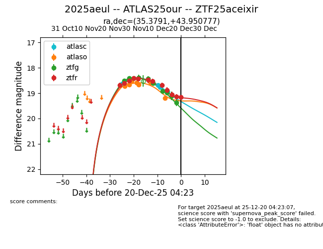
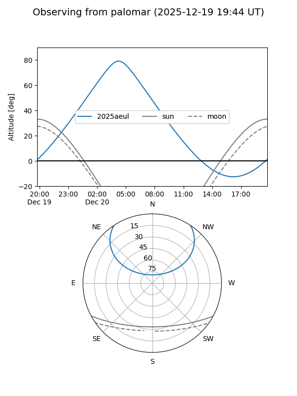
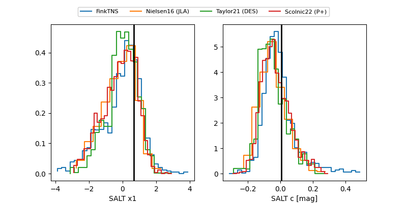

2025aeul
Target 2025aeul at 2025-12-20 04:19
Aliases and brokers:
FINK: fink-portal.org/ZTF25aceixir
Lasair: lasair-ztf.lsst.ac.uk/objects/ZTF25aceixir
ALeRCE: alerce.online/object/ZTF25aceixir
TNS: wis-tns.org/object/2025aeul
YSE: ziggy.ucolick.org/yse/transient_detail/2025aeul
alt names
ZTF25aceixir (ztf,fink_ztf)
2025aeul (tns,yse)
ATLAS25our (atlas)
Coordinates:
equatorial (ra, dec) = 35.3791,+43.95078
equatorial (HMS+DMS) = 02:21:30.98,+43:57:02.80
galactic (l, b) = (139.6000,-15.98626)
Flags:
Photometry:
last ztfg=19.37, ztfr=19.16
10 ztfg, 12 ztfr detections
Lightcurve

Visibility


Additional plots
